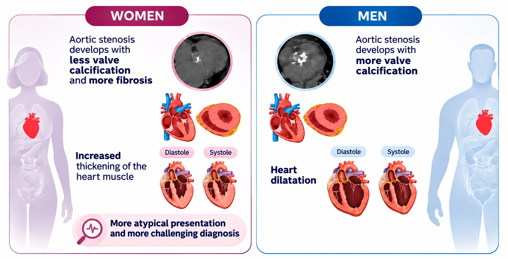
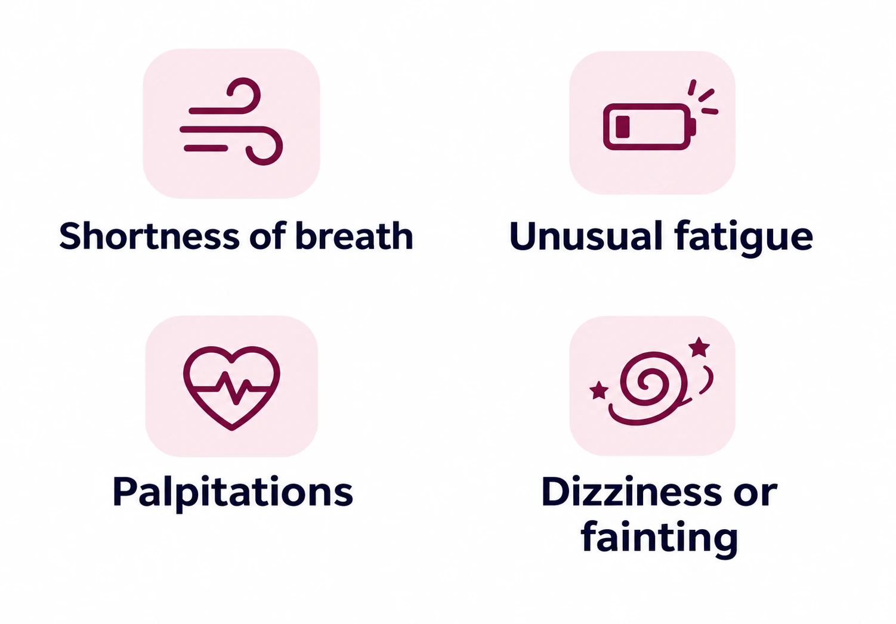
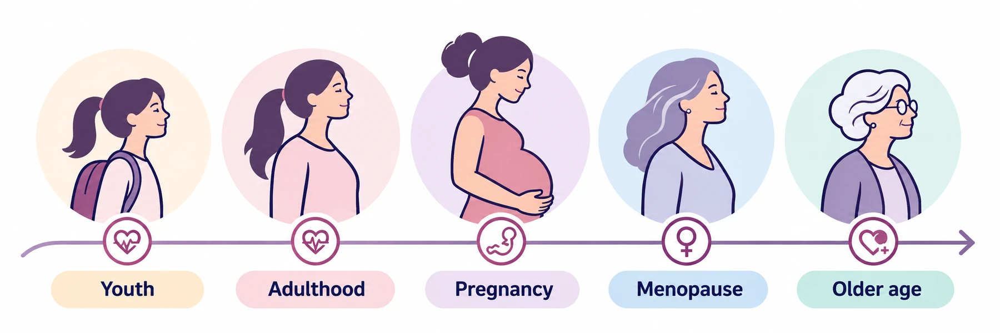

Heart valve diseases, also called valvular heart diseases, affect women as much as men. Yet they do not always develop in the same way, do not necessarily cause the same symptoms and may call for different approaches to diagnosis and treatment.
For a long time, cardiovascular research was carried out mainly in men. We now know that some of that knowledge cannot be applied directly to women.
Understanding these differences better is essential to detect disease earlier, improve its management and offer every woman care that is right for her.
1. Diseases that affect women too
Contrary to popular belief, cardiovascular diseases, including valve diseases, are not mainly men's diseases.
Nearly half of the people diagnosed with valve disease are women. However, how common each disease is varies with sex and age.
47% of valve disease diagnoses are in women.
60% of people with moderate or severe tricuspid regurgitation are women.
- Aortic stenosis affects both sexes: more men among patients under 50, and possibly more women after 50.
- Aortic regurgitation is more common in men.
- Mitral regurgitation affects both sexes, but its causes are different.
- Tricuspid regurgitation affects women more.
Valve diseases can affect women at every stage of their lives, although they become more common with age.
2. Valves and a heart that respond differently
Heart valves do not deteriorate in the same way
The biological mechanisms behind valve diseases can differ between women and men.
Aortic stenosis is an excellent example. In this disease, the aortic valve gradually thickens and stiffens, which limits how far it can open.
For the same severity of disease:
- in men, the valve generally has more calcium deposits (calcification);
- in women, the valve generally has more fibrous tissue (fibrosis) and less calcium.
A woman's valve can therefore be severely diseased even though it contains relatively little calcium.
Conversely, calcium deposits around the mitral valve, called mitral annular calcification, are more common and often more extensive in women.
These observations show that the biological mechanisms of valve diseases are complex and that the role of sex can vary from one valve to another.
At present, there is no medication that can slow or stop the progression of valve diseases. When the disease becomes severe and requires an intervention, only surgery or catheter-based procedures can repair or replace the diseased valve.
That is why it is essential to understand the differences between women and men in how these diseases develop. Better knowledge of these biological mechanisms could pave the way for new treatments, better suited to women and men alike.
Women's hearts adapt differently
On average, women have a smaller heart and smaller heart valves than men. But these differences are not explained by body size alone.
When a valve becomes diseased, the heart has to adapt to keep blood circulating. This adaptation is called cardiac remodelling.
In women, the heart muscle often tends to thicken without the heart chamber getting much larger. The heart can then become stiffer and have more difficulty filling with blood.
In men, enlargement of the heart chambers is seen more often in some valve diseases.
These differences can have important consequences for how the heart works, when symptoms appear, how the disease is detected and the best time to intervene.

3. Symptoms that are sometimes underestimated
Women and men with valve disease can have the same symptoms. However, women report some of them more often, in particular:
- shortness of breath on exertion;
- unusual fatigue;
- a reduced ability to carry out daily activities;
- palpitations;
- dizziness or feeling faint.

These symptoms can appear very gradually and be wrongly put down to aging, stress, menopause or lack of physical activity.
Some women also adjust their activities to their symptoms, sometimes without even realizing it: they walk more slowly, avoid stairs or take more breaks.
Work and family responsibilities can also lead some women to put off a medical appointment or to give their own health lower priority.
A gradual decline in your physical capacity should not automatically be seen as a normal consequence of aging.
4. A diagnosis that still too often comes late
Several scientific studies show that women with valve disease are often diagnosed, or referred to a specialist, later than men.
Several factors may explain this.
A disease that is suspected less often
Cardiovascular diseases in women remain under-recognized. Symptoms are not always linked to a heart problem, which can delay the necessary tests.
Women are also less likely to receive a routine cardiovascular examination during visits to their family doctor. According to the Fédération Française de Cardiologie, only 24.2% of women receive an examination that includes listening to the heart with a stethoscope and a blood pressure measurement, compared with 31.3% of men. (Source: Fédération Française de Cardiologie, Le Cœur des femmes.)
29% lower likelihood of having their heart listened to in primary care.
Yet listening to the heart (auscultation) is a simple, quick and non-invasive examination that can detect a heart murmur, often the first sign of valve disease, long before symptoms appear.
This difference in how the clinical examination is carried out could therefore contribute to the under-diagnosis of valve diseases in women and delay their care.
Listening to the heart is an essential step in the early detection of valve diseases, even when there are no symptoms.
Diagnostic criteria that are not always suited to women
Many of the criteria used to assess the severity of valve diseases were historically established in populations made up mostly of men.
Because women's hearts are generally smaller and adapt differently to valve disease, some of these criteria can underestimate how severe their disease is.
For example:
- In aortic stenosis, an amount of calcium that corresponds to severe disease in a woman may not be enough to define severe disease in a man.
- In aortic or mitral regurgitation, a woman's heart can be significantly affected without reaching the heart dimensions traditionally used to recommend an intervention.
- A heart whose ability to contract appears normal may nonetheless have significant abnormalities in how it works.
Research is gradually establishing diagnostic criteria that are better suited to women. Some are already part of clinical practice, while others are still being studied.
5. Specific considerations at every stage of life

Pregnancy
During pregnancy, the heart has to pump a larger volume of blood to meet the needs of the mother and the baby.
This increase in the heart's workload can reveal a valve disease that had been silent until then, or worsen the symptoms of a disease that is already known.
Young women who have a heart murmur, or who have a family member who had valve disease at a young age, should talk to their doctor if they are planning a pregnancy, even if they have no symptoms. A heart assessment before pregnancy could detect a possible valve disease and prevent certain complications.
When a woman has a known valve disease, it is important to discuss any plans for pregnancy with her medical team in order to assess the risks and adjust her follow-up and, if necessary, her treatment.
Taking care of your heart before pregnancy also means taking care of your future baby's health.
Menopause and hormones
The hormonal changes that occur over the course of a woman's life can influence her cardiovascular health.
In particular, some studies suggest that early menopause could be associated with a higher risk of valve disease.
However, we still do not fully understand the precise role of female hormones in the development and progression of these diseases.
The influence of age at menopause, pregnancies and hormone therapy is an important area of research for better understanding women's valve health.
6. Treatments that need to be tailored
Women benefit from treatments for valve disease just as men do. However, some of their specific characteristics need to be taken into account when choosing a treatment.
The smaller size of their heart valves can, for example, make it harder to choose a replacement valve prosthesis. The characteristics of the valve damage can also affect whether a valve can be repaired.
Catheter-based procedures, which make it possible to treat some valve diseases without open-heart surgery, offer particularly attractive options for some women.
In younger women, a possible future pregnancy can also influence the choice of treatment and of the type of valve prosthesis.
There is no single treatment that suits all women. The choice must take into account the anatomy of the heart, the type of disease, age and general health, as well as each patient's preferences and life plans.
7. Why is research in women essential?
For decades, women were under-represented in cardiovascular clinical studies, and they still too often are today! Despite growing awareness and the progress made in recent years, this under-representation persists. It contributes to significant gaps in our knowledge and to inequalities in diagnosis, access to treatment and quality of care.
It is therefore essential not only to include more women in clinical studies, but also to study their specific biological and clinical characteristics.
Today, research aims to better understand:
- the biological mechanisms specific to valve diseases in women;
- the role of hormones and reproductive history;
- differences in how diseases progress;
- how the heart muscle adapts;
- the diagnostic criteria best suited to women;
- the best time to intervene;
- the effectiveness of different treatment strategies.
This is at the heart of the mission of our Canada Research Chair in Women's Valve and Heart Health.
By studying women specifically, and also by comparing women and men, we aim to develop medicine that is more precise, more personalized and more equitable.
Understanding the differences means better diagnosis, better treatment and better heart health for women.
Key points
- Shortness of breath, unusual fatigue, palpitations, dizziness or a decline in your ability to do your activities should not be put down to aging: talk to your doctor.
- If you are planning a pregnancy and could have a valve disease (heart murmur, valve disease in the family), talk to your doctor before the pregnancy.
- Do not hesitate to tell your doctor about early menopause (before age 45) or complications during a pregnancy (high blood pressure, preeclampsia, gestational diabetes, miscarriage): these are risk factors for heart disease, and possibly for valve disease as well.
The information presented here is provided for educational purposes and does not replace the advice of a health professional.